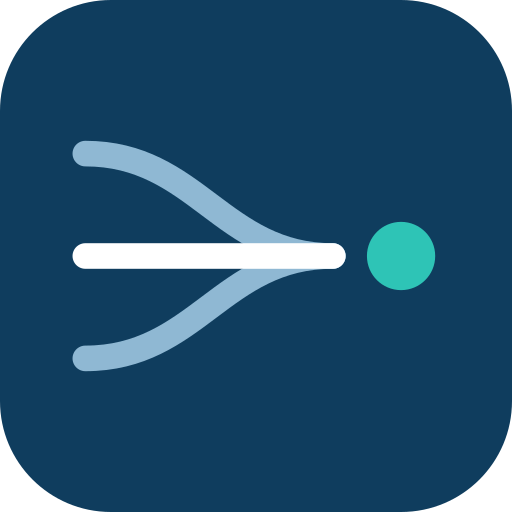

紙本作業
查找慢

順流 免費健檢 ↗少抄寫、少輸入、少跑紙本。先免費看一條流程。
挑一條最卡的流程，我們幫你找出問題在哪。
查找慢
天天重複輸入
資料不互通
試做了沒上線
資料不再散落，流程自己跑，人只做判斷。
重複的事交給系統，異常才通知人。
紙本、掃描檔變成查得到的資料。
依你的流程量身做，不硬套模板。
重要決定有人確認，權限與備份齊全。
做出能用的系統，不只是報告。
紙本、建檔、簽核，變自動。
紙本、掃描檔、Excel，變成查得到的資料。
依你的流程，量身做系統。
銷售、庫存、採購、帳款、排班，一個畫面看完。
確認有效，再往下做。
找出要解決什麼。
→ 範圍先做一個小版本。
→ 原型做成正式系統。
→ 系統教學、監控、調整。
→ 穩定運作✓每天重複整理大量文字、文件或表單
✓團隊知識散落，新人上手時間過長
✓客服、業務或營運需要更快產出初稿
✓系統很多，但資料仍靠人工複製貼上
✓已有 AI 原型，卻卡在正式上線與維運
填幾個選項，1 個工作天內回覆你。
可以。我們負責建置、訓練與維運，你只需要一位熟悉流程的人配合。
不用。從一個流程、一小批資料開始就好。
重要決定都有人覆核，並保留完整紀錄。
多數可以，評估後會寫進交付清單。
你自己接手，或交給我們持續維運，都可以。
免費，從一條流程開始。
取得免費健檢準備清單 ↗